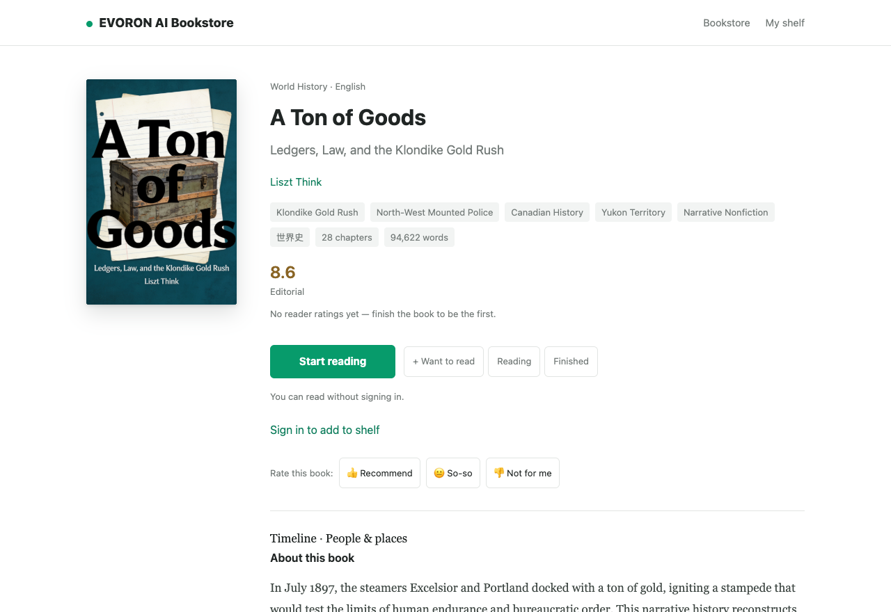

关于我们 / 产品功能
EVORON 产品功能
不只生成文字。
把一本书从想法，推进到读者面前。
选题与规划
先把想写的书，说清楚。
从一个兴趣、一段经验，或一个尚未找到答案的问题开始。
- 对话确定方向
- 描述主题、读者、写作角度与篇幅，逐步完善书名、类型、语言和风格。
- 建立全书结构
- 查看大纲与章节蓝图，把“想写什么”推进为有范围、有顺序的写作安排。
- 保留写作委托
- 在工作台查看设定与写作要求，让后续章节有共同的出发点。
你得到的是
一份明确的写作设定，以及可查看的全书结构。
支持中文与英文、虚构与非虚构；具体流程随作品类型与配置变化。
长篇写作
按整本书推进，而不是逐段拼接。
把章节、进展与书稿放在同一个工作台里，减少在多轮对话之间搬运内容。
- 查看章节与正文
- 从书稿工作区进入项目，查看章节状态、当前写作阶段与已形成的正文。
- 调整后续写作方向
- 写作中可以排队提交要求，供后续章节使用；它并不等于自动重写之前的内容。
- 暂停后继续
- 需要审视方向时可暂停，保留已有进度，再继续推进。暂停会在可安全停止的位置生效。
你得到的是
逐步形成的长篇书稿，以及可追踪的任务进展。
生成时间与积分消耗取决于篇幅、配置和实际运行情况，不承诺固定时长完成整本书。
编修与质量
完成初稿之后，继续把问题处理好。
让评测不止停在一个分数，而是帮助作者回到需要处理的内容。
- 阅读与编修书稿
- 在编修界面处理正文、章节标题及插图，结合成品编修流程继续完善作品。
- 查看编辑评测
- 查看报告中的评价与逐条编辑建议，了解哪里值得进一步审阅。
- 定位对应章节
- 报告能够明确匹配章节时，可直接打开对应章节；无法匹配时会说明原因。
你得到的是
可继续修改的书稿，及辅助审阅的质量报告。
历史报告对应评测时的稿件；章节链接打开当前工作稿。评测不是事实准确率，也不能代替作者核实。
封面与导出
让书稿成为可以交付的作品。
正文之外，完成读者认识一本书所需要的封面、简介与文件。
- 制作与选择封面
- 根据书籍内容生成封面；不满意可重新生成，也可以从历史封面中选择。
- 编辑出版信息
- 在发布中心完善书名、作者署名与内容简介，查看书籍预览。
- 下载书稿文件
- 工作台提供 Word、Markdown 与纯文本导出，便于保存、继续编辑或准备后续发行材料。
你得到的是
封面、作品介绍，以及可以下载和继续使用的书稿文件。
重新生成封面会消耗积分。导出文件不等于已经通过第三方平台的格式或内容审核。
发布与分享
是否公开，由作者决定。
可以先为自己写一本书，也可以将愿意分享的作品带给更多读者。
- 从工作台进入发布中心
- 集中处理封面与作品信息，确认后发布到 EVORON 书城。
- 让读者了解作品
- 通过书籍详情、简介、目录和正文，向读者展示作品内容。
- 保留外部发行的选择
- 需要在其他平台发行时，可利用导出的书稿继续准备；第三方提交与审核单独进行。
你得到的是
在 EVORON 书城公开的作品及其访问页面。
公开发布不意味着放弃权利，也不等于传统出版社背书；作者应确认拥有必要的发布权限。
发现与阅读
从一本感兴趣的书，进入一个新领域。
公开书城的阅读免费。写作积分用于创作服务，不是阅读门票。
- 先了解，再开始
- 浏览书籍与分类，通过简介、目录了解一本书是否适合自己。
- 建立自己的书架
- 登录后把想读、在读的作品收进书架，方便之后找到。
- 在网页中阅读
- 从详情页进入正文，按章节阅读；手机也可以直接使用，无需先购买创作服务。
你得到的是
可以持续发现作品、管理书架并阅读正文的书城。
免费阅读不代表可以未经授权转载、改编或再次发行。
真实作品 / A Ton of Goods
一本书，如何来到读者面前。
这本英文非虚构作品从物资与生存成本切入克朗代克淘金热。公开的书籍页面承接封面、作品信息与阅读入口，读者可以先了解内容，再决定是否开始阅读。
